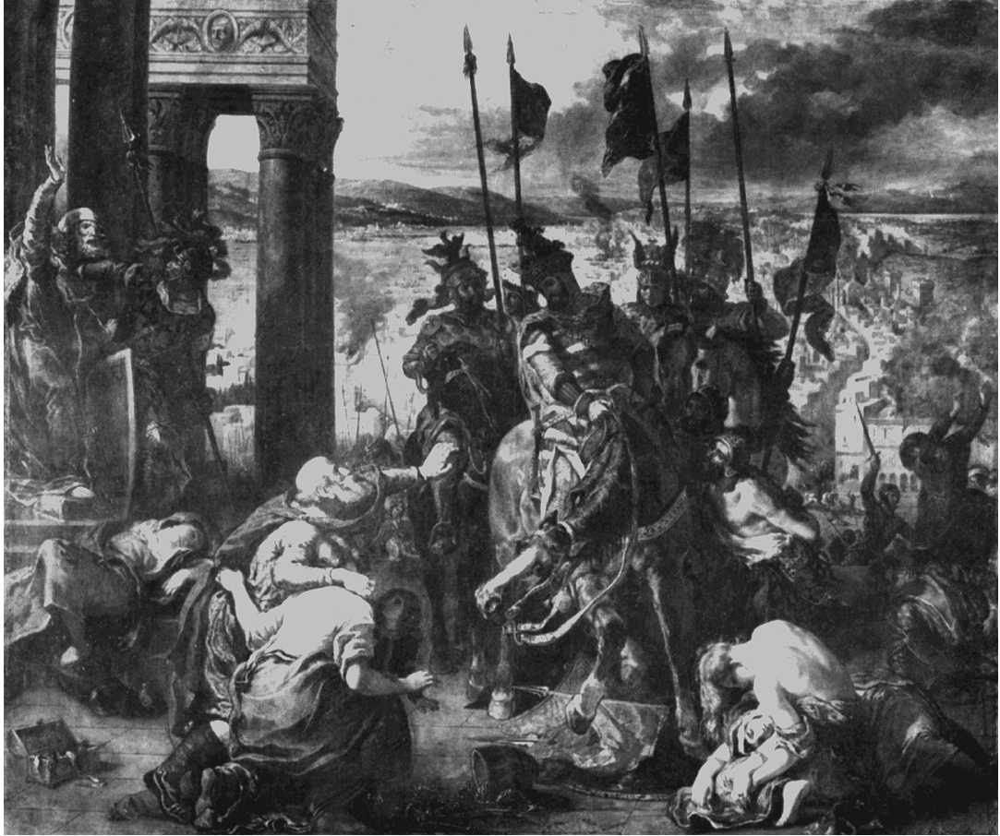

1025年，“屠杀保加利亚人的刽子手”巴西尔去世时，拜占庭帝国的显赫地位似乎是稳固的、未受到挑战的。北部边境以多瑙河为固定界线。这时，阿拉伯伊斯兰教世界已经分裂，不再构成威胁。凡是西方出现的东西，与博斯普鲁斯海峡沿岸的第二罗马帝国相比，都显得十分原始，无足轻重。不过，在巴西尔去世后的半个世纪里，帝国便陷入困境，大约不到两个世纪后，即1204年，首都就落入受人鄙视的西方蛮族手中。
拉丁人对君士坦丁堡的征服
1204年第四次十字军东征期间拉丁人对君士坦丁堡的占领，是拜占庭衰落过程中的一个重大事件。当时拜占庭史学家尼塞塔斯·科尼亚提斯所作的如下描述，揭示了实际发生的情况，同样也揭示了希腊人对拉丁人的憎恨。*
……我该如何讲述这些邪恶的人所干下的勾当！唉，我们原本应该崇拜的偶像，却被他们用脚践踏！唉，值得崇敬的烈士们的遗骸被扔到了不干净的地方！然后，有人看到了大家都怕得不敢听的事情，那就是圣餐面包和葡萄酒喷溅满地或被四处抛散。他们夺走宝贵的圣盒，将圣盒中的装饰品塞进胸前衣襟，将那些残存的破损的器物用作盘子和酒杯……
他们亵渎大教堂［圣索菲亚教堂］的言论不堪入耳。用各种贵重材料制成并为整个世界所崇敬的圣坛，被打成了碎片，分发给了士兵们，就像光彩夺目的其他所有宗教财富的遭遇一样。
用稀有材料制成的神瓶和圣器，极其优美、极具艺术性；环绕法庭屏风和讲道台屏风、镶有金子的精制银饰品，做工令人钦佩；它们和门及其他许多装饰品一起，成为战利品，被劫掠一空。骡子和备有鞍具的马给牵到了寺庙的圣殿上。其中有一些骡子和马不能在富丽、光滑的路面上站稳脚，而它们摔倒时，便会遭到刺戳，因此，神圣的路面被鲜血和污物玷污……
最困难、最费力的事莫过于靠祈祷来使这些愤怒的野蛮人变得温顺善良，他们一听到令人不快的话就会大发雷霆，因此，什么事都有可能使他们勃然大怒。任何想要尝试说服和阻止的人，都会被取笑为疯子或长舌妇。他们时常拔出短剑来对付那些胆敢反对他们或拒绝他们要求的人。
这种悲哀，人人有份。在巷子里、街道上、寺庙中，到处可闻抱怨声、哭泣声、哀悼声、悲叹声，男人们呻吟着，女人们尖叫着，伤害、强暴、囚禁、骨肉分离，充斥着每个角落。贵族们不光彩地四处游荡；那些上了年纪的人眼含热泪；富人们变得贫穷起来。因此，在街道上、角落里、寺院内、书房中，已找不到一处不受攻击的地方，也没有一个地方能为这些哀求者提供庇护。到处都布满了各种罪行。啊！不朽的上帝！人们的苦难多么深重，痛苦又多么巨大！
* D. C. Munro, trans., Translations and Reprints from the Original Sources of European History, rev. ed., series 1, vol. 1, number III（University of Pennsylvania Press, 1912）, pp. 15，16.
形势陡然逆转的一个原因是，主管各省的军事将领的反抗不断增长，破坏了帝国的军事体制。虽然巴西尔二世十分强悍，能够控制军队，但他的继承者却软弱无能，无力控制军队，尤其是在军事将领同各省大地主联合起来以后。
严重的经济失调也削弱了帝国。私人和寺院的大地产使帝国的岁入减少，尤其是在巴西尔的继承者们减免了大地主的大部分捐税之后。与此同时，朝廷的奢侈和外国雇佣军的开支，使帝国的支出不断上升。帕齐纳克人和塞尔柱突厥人的骑兵袭击，危害也很严重，使某些地区土地荒芜，颗粒无收。币值稳定达七个世纪之久的拜占庭金币索里达，这时也连续贬值。
同其他许多帝国一样，拜占庭的内部衰弱招致了外来侵略。来自西方的诺曼人冒险者，最初是拜占庭的雇佣军，这时转而反对衰弱的帝国，占领了自查士丁尼征服时期以来一直属于拜占庭的意大利南部领地。同样，东方的塞尔柱突厥人从家乡中亚进入伊斯兰教帝国后，被巴格达哈里发雇为雇佣军。这些雇佣军逐渐变为主人，于1055年占领巴格达，建立了塞尔柱帝国。这些突厥人使行将灭亡的伊斯兰教世界得以复兴，重新统一了印度和地中海之间的广大地区，并逼近将拜占庭帝国和伊斯兰教世界分隔数世纪的托罗斯山脉边境。
这是1071年拜占庭遭受的两大灾难的背景，这两大灾难标志着帝国长达数世纪的衰落开始了。一个灾难发生于意大利南部的巴里，在那里，诺曼人占领了拜占庭唯一残存的一个据点。另一灾难，也是更具决定性的失败，发生于小亚细亚的曼齐刻尔特。在那里，塞尔柱人在一次重大战役中击败了拜占庭皇帝，这一战役使小亚细亚由希腊人的基地变成突厥人的根据地。这一战役结束之后，两位彼此竞争的拜占庭皇帝为了争夺王位而开战，他们各自雇了突厥军队互相争斗。于是，突厥人能随意进入小亚细亚，渐渐地将小亚细亚从希腊拜占庭势力的基地变成了突厥民族的中心地。

图88 十字军屠城。1204年春，十字军在佛兰德的鲍德温的指挥下占领了君士坦丁堡，烧杀抢掠三日整。这是19世纪欧仁·德拉克洛瓦所作的一幅绘画中对这一场景的描绘。
精明顽强的康尼努斯皇帝［亚历克赛一世］（1081—1118年在位）挽救了似乎即将灭亡的拜占庭帝国。他给予威尼斯人极大的商业特权，以换取他们的支持，来反对威胁要进攻君士坦丁堡的诺曼人。他还向西方基督教世界求援，反对穆斯林塞尔柱人。他得到的不是自己所想要的数量有限的外国雇佣军，而是一批批难控制的十字军。有些十字军是由亚历克塞有充分理由不信任的诺曼人领导的。东方基督教世界和西方基督教世界之间的接触，导致了彼此间的怀疑和公开敌对。希腊人和拉丁人彼此都不喜欢对方的语言、宗教、政治和生活方式。
这就是被恰当地戏称为“商人东侵”的第四次十字军东征的背景。威尼斯商人的经济计划，西方冒险家对战利品和土地的追求，拜占庭觊觎王位者的甜言蜜语，拉丁人心中对所谓的狡诈、柔弱、贪婪和异端的希腊人的长期不满，成了第四次十字军东征的特征；由于贪婪和报复欲望，第四次十字军东征偏离了解放耶路撒冷这一原定目标，转而进攻君士坦丁堡。1204年春，法兰克、威尼斯、佛兰德和日耳曼联军攻陷君士坦丁堡，使它接连三日遭到冷酷无情的掠夺和屠杀。“即使是萨拉森人，”一位拜占庭编年史家说，“也比他们仁慈。”似乎有悖常理的是，第四次十字军东征的最终结果是为伊斯兰教统治整个中东铺平了道路。尽管1261年拜占庭帝国得以恢复，但再也没能从拉丁人征服的创伤中复原过来，而是一直处于无依无靠的虚弱状态，直到1453年奥斯曼帝国占领君士坦丁堡为止。